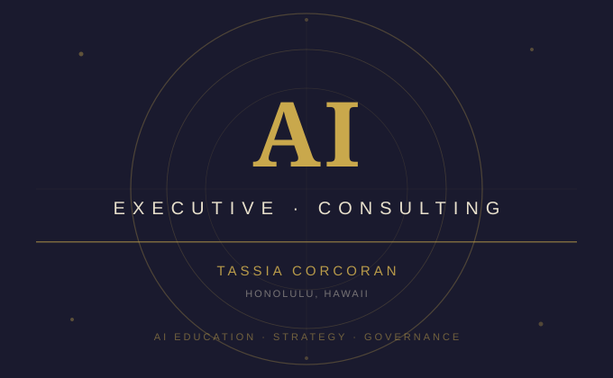

As AI becomes embedded in everyday business operations, many executives and organizational leaders find themselves making high-stakes decisions about tools and systems they don’t fully understand. This consulting practice bridges that gap — delivering structured, accessible AI training designed specifically for business leaders with no technical background.
To date, I have trained 100+ executives across private sessions and organizational engagements, with upcoming presentations at the Hawaii Chamber of Commerce and the Hawaii Labor Summit (June 2026), where I will lead two sessions on AI in the workplace:
Sessions are structured to meet participants where they are — whether a group of 8 senior leaders or a room of 50 — and adapt in depth and specificity based on the audience’s industry, needs, and existing AI maturity.
The consulting engagement is designed as a progressive curriculum. The first session establishes a shared foundation of AI knowledge, ensuring all participants — regardless of prior exposure — can engage in informed, strategic conversations about AI adoption.
The foundational session demystifies AI at the conceptual level before moving into practical business application. Topics include:
After the foundation session, the curriculum adapts based on the organization’s industry, workforce, and specific AI use cases. Typical advanced topics include:
This is not generic AI awareness training. Each engagement begins with a readiness assessment and workflow analysis to understand where the organization currently stands and where AI adoption is most likely to create value — or risk.
The goal is not to make executives AI engineers. It’s to give them the conceptual fluency and decision-making framework to lead AI initiatives responsibly, evaluate vendor claims critically, and ask the right questions of their technical teams.
| Event | Date | Sessions |
|---|---|---|
| Hawaii Labor Summit | June 29, 2026 | AI in the Workplace: Risks, Accountability, and Worker Protections · Leveraging AI to Support Workers and Labor Organizations |
| Hawaii Chamber of Commerce | 2026 (upcoming) | Executive AI Readiness |
The organizations and leaders who go through this training come away with a working mental model of AI — one that holds up under real business conditions. They’re better equipped to evaluate tools, set policy, protect their workforce, and lead AI adoption with intention rather than reaction.
“Her work focuses on helping organizations understand and implement AI in practical ways through readiness assessments, workflow analysis, and the development of AI use cases that support real operational needs.”